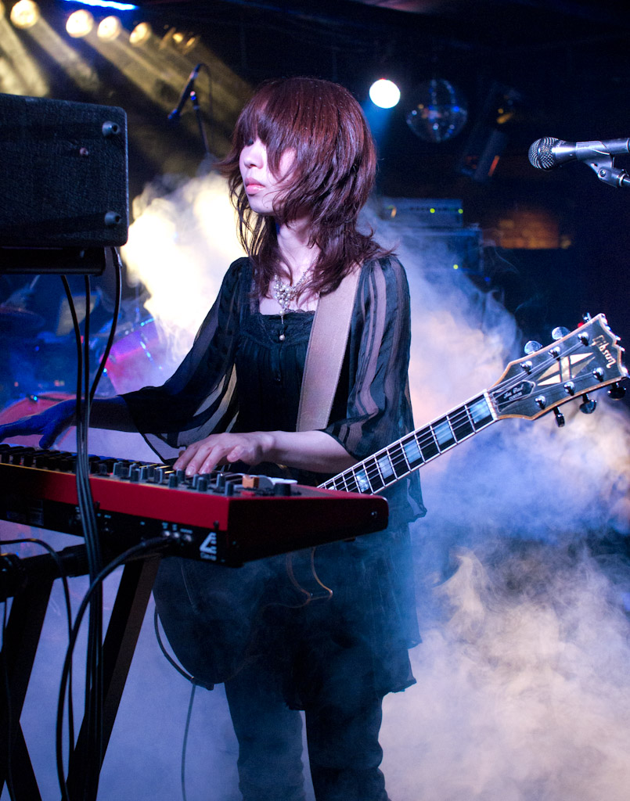

Boris is a Japanese experimental music band formed in 1992 in Tokyo and composed of drummer Atsuo, guitarist/bassist Takeshi, and guitarist/keyboardist Wata. All three members participate in vocal performance. Boris has released more than twenty studio albums on various labels around the world, as well as a wide variety of live albums, compilations, EPs, singles, and collaborative albums.
Boris was originally a four-piece band with Atsuo on lead vocals, Wata on guitar, Takeshi Ohtani on bass, and Nagata on drums. The band is named after a song of the same name on the Melvins album Bullhead. Boris's debut album Absolutego was released in 1996 on their own record label Fangs Anal Satan. Nagata departed in 1996 and Atsuo switched to drums, while Wata expanded her duties to lead guitar and keyboards, and Takeshi took on bass and rhythm guitar duties on a double-necked instrument of his own design. All three adopted lead vocal duties, and the band has remained a three-piece ever since.
In Japan, Boris release most of their music on the indie label Inoxia Records. Though relatively unknown in their home country, a series of reissues of their early albums on the American label Southern Lord Records caused a surge of popularity in North America. Boris also collaborates with other artists regularly, first on the 1998 album Black: Implication Flooding with experimental musician Keiji Haino. They have released seven collaborative albums with noise artist Merzbow, and have released collaborative albums with international artists like Sunn O))) and Ian Astbury
Their international popularity was bolstered by their 2005 album Pink, which was met with considerable critical praise and a strong response from music fans when reissued in the US on Southern Lord. Blender magazine and SPIN magazine both named it one of 2006's best albums.[10] The album also topped the metal section of Canadian magazine Exclaim 's 2006 Reader's Poll, and it was named in the top 10 of Pitchfork Media's Top 50 Records of 2006. They also appeared on the avant-garde metal soundtrack to Jim Jarmusch's film The Limits of Control in 2009. Regarding Boris, Jarmusch said that "what's really remarkable is when they play live they're in the mode, in a way, of jazz musicians, not structurally or musically, but the way they listen to what the others are doing and build on it. Each time they play something it's obviously different, every time."
Boris received additional international exposure when they opened for Nine Inch Nails on part of the 2008 segment of the Lights in the Sky tour. From 2011 to 2017, they released several albums on Sargent House Records, and continue to reissue previous albums in new formats. In 2017, the band's 25th anniversary, they considered retirement after one final album. However, a successful songwriting and recording process for that album encouraged the band to continue. The album Dear was released internationally in July 2017 through Sargent House. The album, LφVE & EVφL was released in October 2019 via Jack White's label Third Man Records. While self-isolating during the COVID-19 pandemic, Boris quickly wrote and recorded the album NO, which was self-released in July 2020.
MEMBERS
- Takeshi - vocals, bass guitar, rythm guitar

- Wata - vocals, lead guitar, keyboards

- Atsuo - vocals, drums